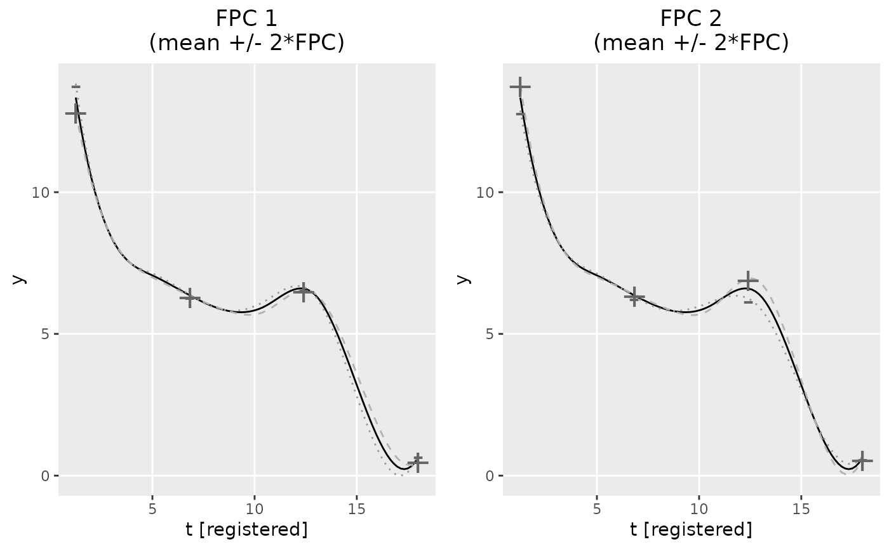

plot.fpca.RdS3 plot method for class fpca.
Plot FPCA results by visualizing the variation of the individual FPCs around
the global mean. based on an object created with function
fpca_gauss, bfpca or gfpca_twoStep.
The shares of explained variance are included in the plot titles if
x contains an element evalues_sum.
# S3 method for fpca
plot(
x,
plot_FPCs = 1:x$npc,
var_factor = 2,
response_function = NULL,
subtitle = TRUE,
xlim = NULL,
ylim = NULL,
xlab = "t [registered]",
ylab = "y",
...
)| x | Object of class |
|---|---|
| plot_FPCs | Optional index vector of the FPCs to be plotted.
Defaults to all FPCs contained in |
| var_factor | Numeric factor with which the FPC's are multiplied to display their variation in the plots. Defaults to 2, but can be set to 2 times the standard deviation of the obtained FPC scores. |
| response_function | Optional response function to be applied before
plotting the curves. Defaults to |
| subtitle | If TRUE (default) the parameter |
| xlim, ylim | Optional numeric vectors with limits for the x and y axis. |
| xlab, ylab | Optional titles for the x and y axis. |
| ... | Additional arguments passed to |
@return If multiple FPCs are plotted, returns a grid of ggplot
plots, created with cowplot::plot_grid. If only one FPC is plotted,
returns a single ggplot plot.
Alexander Bauer alexander.bauer@stat.uni-muenchen.de
data(growth_incomplete)
fpca_obj = fpca_gauss(Y = growth_incomplete, npc = 2)
#> Warning: fpca_gauss convergence not reached. Try increasing maxiter.
if (requireNamespace("ggplot2", quietly = TRUE) &&
requireNamespace("cowplot", quietly = TRUE)) {
library(ggplot2)
plot(fpca_obj)
}
